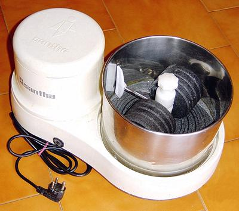

Wet Grinder

This machine is quite rare in North America, and a bit expensive (about
2020 US $225 to $399), but is common in households in South India and
the Tamil regions of Sri Lanka. In both regions, steamed Idli cakes and
fried lacy Dosa pancakes are made often, or even daily. The Wet Grinder
is the best tool for grinding the batter, if you need higher quantities
than can be easily handled by the popular
Mixie, but bulkier and less conveniently at hand.
Photo by Vinayak.s contributed to the Public Domain
.
These come in various sizes, but almost all have platen and rollers
(or cones) made of a particular variety of granite found in the
Coimbatore district of western Tamil Nadu, India. Most wet grinders
are manufactured in the Coimbatore district.
More on Kitchen Gear.
ke_wetgrndz 201103 - www.clovegarden.com
©Andrew Grygus - agryg@clovegaden.com
Photos on this page not otherwise credited are ©
cg1 - Linking to and non-commercial use of
this page permitted